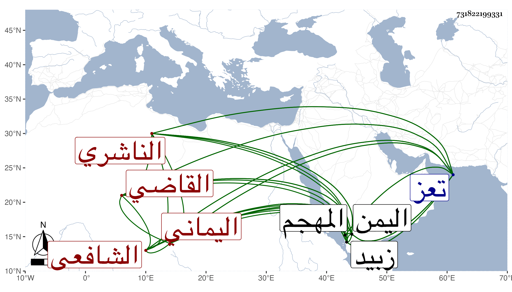

0902Sakhawi.DawLamic.ITO20230111-ara1.EIS1600.731822199331
Biography ID: 731822199331
201
عبد الله بن محمد بن عبد الله بن عمر بن أبي بكر بن عمر بن عبد الرحمن ابن عبد الله القاضي أبو الفتوح الناشري اليماني الشافعي . ولد في صفر سنة ثمان وخمسين وسبعمائة بقرية السلامية من اليمن وأخذ العلم عن أبيه وعن شيخ والده الشرف أبي القسم بن موسى بن محمد الزوالي في آخرين وسمع عبد الرحمن ابن عبد الله بن أبي الخير ، وتقدم في العلم والعمل والجاه مع كثرة المحاسن وجودة الخط والضبط ، وانتفع به جماعة وشاع أن من قرأ عليه انتفع ويقال أن سبب ذلك أنه رأى النبي صلى الله عليه وسلم وبشره بالفتح عليه بالعلم وله شرح لقطعة من جامع المختصرات وولى تدريس الجامع المنشأ بقرية الملاح خارج زبيد مع قضائه لشغفه بالإقامة فيها وإلا فقد قال المجد الفيروزابادي : وهو حقيق بولاية القضاء الأكبر في اليمن بل كان يقول أكرم من لقيت باليمن الملك الأشرف إسماعيل ثم صاحب الترجمة ثم لما جفا الأشرف قرية الملاح نقله لقضاء تعز ودرس بمدرسة الأتابك سنقر بن هزيم غربي حصن تعز مع خطابة جامع عدينة وبالغ أهل تعز في تعظيمه ، كل ذلك مع شهرته بالبراعة والفصاحة والكرم والهمة والمروءة وكتب إلى الناصر بن الأشرف يشكو الأمير البدر محمد ابن بهادر السنبلي لكثرة معارضته له :
| إن العلوم بقضها وقضيضها | تشكو أمانة ندبها وفروضها |
| وأوامر الشرع الشريف تعطلت | حتى استكانت دلة ... لنقيضها |
ولم يزل على جلالته حتى مات في حياة والده مبطونا في ليلة الجمعة من صفر سنة أربع عشرة عن ست وخمسين بمدينة المهجم ودفن عند عمه القاضي إسماعيل ابن عبد الله وقال أبوه والله لقد أظلمت الدنيا بعده وتغير حال أهله وعياله ووالده ومن كان يعتاد بره ومعروفه حتى أنه لينكرهم من كان يعرفهم في حياته ، طول العفيف الناشري ترجمته .
